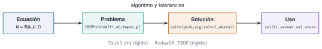
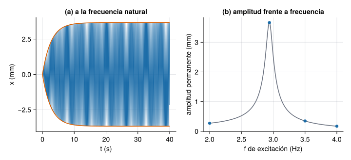
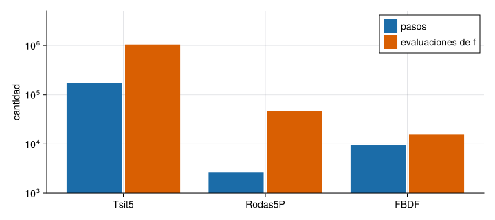

Una estructura es, ante todo, una ecuación diferencial: \(m\ddot x+c\dot x+kx=F(t)\) dice cómo se mueve un modo bajo una fuerza. Para una fuerza armónica y un sistema lineal hay fórmulas; para un viento turbulento, un amortiguador no lineal, un impacto o un sistema con modos muy distintos, se integra numéricamente. Esta unidad va de menos a más. Primero se escriben a mano los tres integradores básicos (Euler explícito, Euler implícito y Runge–Kutta) en un oscilador de un grado de libertad, para ver por qué unos inyectan energía, otros la quitan y otros la conservan casi bien. Después se pasa a OrdinaryDiffEq.jl: a plantear la ecuación como un problema de valores iniciales, a elegir el método y las tolerancias, a comprobar el resultado contra una solución conocida, a reconocer un sistema rígido y a detectar sucesos (como superar un umbral). Las aplicaciones son el oscilador lineal, el oscilador no lineal de Duffing y la respuesta de un mástil al desprendimiento de vórtices del viento.
NotaCómo se lee esta unidad
Tiempo orientativo: 120 minutos. Objetivos (4), teoría en ocho píldoras (30), práctica guiada (40), «Pídeselo a Claude» (12), ejercicios (32) y cierre (2). Todos los datos se generan en la página (parámetros declarados y, donde hay azar, semilla fija), así que se conoce la respuesta correcta. El oscilador de 1 GDL es el del edificio de la vía M (masa \(2\cdot10^{5}\) kg, \(f_0=2{,}94\) Hz, \(\zeta=2\ \%\)); el edificio es el de tres plantas de M2; el mástil del viento es un ejemplo ilustrativo inventado, sin relación con ninguna estructura real ni con una norma. Se usan OrdinaryDiffEq.jl y las funciones de Resonancia.jl.
Objetivos y prerrequisitos
Objetivos. Al terminar esta unidad sabrás:
escribir una ecuación de movimiento como sistema de primer orden y programar a mano Euler explícito, Euler implícito, Heun y Runge–Kutta de orden 4, midiendo su orden, su estabilidad y su coste;
resolverla con ODEProblem y solve, y leer el coste de la integración (pasos y evaluaciones);
fijar reltol y abstol sabiendo que no son el error de la solución, y comprobar un resultado contra una solución exacta o una conservación;
reconocer un sistema rígido y elegir entre Tsit5 y un método para sistemas rígidos (Rodas5P, FBDF) con un argumento numérico;
simular un oscilador forzado, uno no lineal (Duffing) y la respuesta de un mástil al viento, y detectar sucesos con una función de callback.
Prerrequisitos. El curso no los impone en el temario; conviene J3.3 (valores propios y matriz exponencial), J3.5 (error y tolerancias) y, de la vía M, el oscilador de 1 GDL (M5) y sus sistemas de varios grados de libertad (M6).
Reparto con otras unidades. La teoría de vibraciones está en M5 y M6; la respuesta en frecuencia, en M7 y J3.7. Aquí se integra en el tiempo y se contrasta con esas soluciones.
Teoría breve
J3.6.1 Euler explícito: el integrador más sencillo
Un problema de valores iniciales (PVI) es una ecuación \(\dot{\mathbf u}=\mathbf f(\mathbf u,p,t)\) con \(\mathbf u(0)\) dado. Las ecuaciones de segundo orden se reducen a primer orden añadiendo la velocidad como incógnita. Para el oscilador libre, con \(\omega_0=2\pi f_0\),
Es un sistema lineal, \(\dot{\mathbf u}=\mathbf A\mathbf u\) con \(\mathbf A=\begin{bmatrix}0&1\\-\omega_0^2&-2\zeta\omega_0\end{bmatrix}\), y su solución exacta se conoce (respuesta_libre_1gdl, de Resonancia.jl): por eso sirve para medir el error de cualquier integrador. El oscilador es el del edificio de la vía M, con masa \(2\cdot10^{5}\) kg, \(f_0=2{,}94\) Hz (periodo \(T=0{,}340\) s) y \(\zeta=2\ \%\); se parte de un desplazamiento de 1 mm sin velocidad.
Integrar es avanzar con un paso \(h\). Euler explícito usa la pendiente del principio del paso:
Se programa en tres líneas. Se prueba sin amortiguamiento (\(\zeta=0\)), con 40 pasos por periodo (\(h=T/40\)) y cinco periodos (200 pasos); la solución exacta es un coseno de amplitud 1 mm y energía constante:
Ver el código
m, f0, ζ =2.0e5, 2.94, 0.02# masa (kg), frecuencia natural (Hz), amortiguamientoω0=2π * f0; k = m * ω0^2; c =2ζ * m * ω0# frecuencia (rad/s), rigidez (N/m), amortiguamiento (N·s/m)Tper =1/ f0 # periodo (s)matriz_A(ζ) = [0.01.0; -ω0^2-2ζ * ω0]energia(u) =0.5* u[2]^2+0.5* ω0^2* u[1]^2# por unidad de masapaso_ee(A, u, h) = u + h * (A * u) # Euler explícitofunctionintegrar(paso, A, u0, h, n) U =zeros(2, n +1); U[:, 1] = u0for i in1:n U[:, i+1] =paso(A, U[:, i], h)endreturn Uendh, n = Tper /40, 200U_ee =integrar(paso_ee, matriz_A(0.0), [1.0, 0.0], h, n)(factor_de_energia_por_paso =round(1+ (ω0* h)^2, digits=4), energia_final_sobre_inicial =round(energia(U_ee[:, end]) /energia(U_ee[:, 1]), digits=1), x_final_mm =round(U_ee[1, end], digits=2), exacta_mm =respuesta_libre_1gdl(n * h, f0, 0.0))
Cinco periodos después la energía es 131 veces la inicial y el desplazamiento es de 11,07 mm en lugar de 1 mm. No es un error de programación: es lo que hace el método. Para \(\zeta=0\), \(\lvert1+\mathrm i\omega_0h\rvert^2=1+(\omega_0h)^2\), así que cada paso multiplica la energía por \(1+(\omega_0h)^2\) (1,0247 con este \(h\)), por pequeño que sea el paso. Con amortiguamiento el factor es \(1-2\zeta\omega_0h+(\omega_0h)^2\) y la energía crece si \(h>2\zeta/\omega_0=2{,}17\) ms: con \(\zeta=2\ \%\) hay que dar pasos unas 157 veces menores que el periodo solo para no inyectar energía. Además es un método de orden 1: el error baja como \(h\) (se mide en la Figura 2).
Con \(\zeta=0\) y \(h=T/40\), ¿por qué factor multiplica Euler explícito la energía en cada paso?
\(1+(\omega_0h)^2=1+(2\pi/40)^2=1{,}0247\). Tras 200 pasos, \(1{,}0247^{200}=131\).
Con \(\zeta=2\ \%\) y \(f_0=2{,}94\) Hz, ¿cuál es el paso máximo, \(2\zeta/\omega_0\), con el que Euler explícito deja de inyectar energía?
\(2\cdot0{,}02/(2\pi\cdot2{,}94)=2{,}165\) ms. Comprobado: con \(h=2{,}1\) ms la energía decae y con \(2{,}2\) ms crece.
J3.6.2 Euler implícito: la pendiente del final del paso
Euler implícito usa la pendiente al final del paso, que todavía no se conoce:
En un sistema lineal basta resolver un sistema de ecuaciones por paso; en uno no lineal hay que resolver una ecuación no lineal con Newton (J3.4) y calcular el jacobiano, de modo que cada paso cuesta más. Con las mismas condiciones de antes:
Ver el código
paso_ei(A, u, h) = (I - h * A) \ u # Euler implícito (sistema lineal)U_ei =integrar(paso_ei, matriz_A(0.0), [1.0, 0.0], h, n)(factor_de_energia_por_paso =round(1/ (1+ (ω0* h)^2), digits=4), energia_final_sobre_inicial =round(energia(U_ei[:, end]) /energia(U_ei[:, 1]), digits=5), x_final_mm =round(U_ei[1, end], digits=3))
Ahora la energía se pierde: el factor por paso es \(1/(1+(\omega_0h)^2)=0{,}9759\) y a los cinco periodos queda el 0,76 % de la inicial, aunque \(\zeta=0\). Es amortiguamiento numérico: el método se comporta como si el edificio tuviera un amortiguamiento que no tiene, y en un diagnóstico de daño eso se confundiría con un cambio real. Los dos Euler fallan en sentidos contrarios (Figura 1).
Figura 1: Los dos métodos de Euler en el oscilador sin amortiguar, con h = T/40. (a) Plano de fases durante tres periodos: la trayectoria exacta es una circunferencia (gris discontinua); Euler explícito (naranja) se abre en espiral y Euler implícito (azul) se cierra. (b) Energía relativa durante cinco periodos, en escala logarítmica: el explícito la multiplica por 131 y el implícito la reduce al 0,76 %.
La ventaja del implícito es la estabilidad: para un oscilador sin amortiguar, \(\lvert g\rvert=1/\sqrt{1+(\omega_0h)^2}<1\) con cualquier paso, y no explota. Con \(h=0{,}1\) s (poco más de tres pasos por periodo) y 100 pasos:
El explícito se dispara (la energía se multiplica por \(3\cdot10^{64}\)) y el implícito no explota, pero la oscilación desaparece (queda \(3\cdot10^{-65}\) de la energía): estable no quiere decir preciso. Esta propiedad es la que hace útiles los métodos implícitos en los sistemas rígidos de la píldora J3.6.7.
Con Euler implícito, \(\zeta=0\) y \(h=T/40\), ¿qué fracción de la energía inicial queda tras cinco periodos (200 pasos)?
Usa energia_final(paso_ei, Tper / 40, 200), o el factor por paso elevado a 200.
\(0{,}9759^{200}=0{,}007636\): queda el 0,76 %. Es amortiguamiento numérico, no físico.
Con \(h=0{,}1\) s y \(\zeta=0\), Euler implícito no explota, pero la energía final es \(3\cdot10^{-65}\) de la inicial. ¿Qué conclusión es correcta?
El método es muy preciso, porque no explota.
El método es estable, pero con ese paso no sigue la oscilación: estable no es preciso.
Hay un error de programación, porque la energía debería ser 1.
Hay que reducir reltol.
La 2. La estabilidad solo garantiza que el error no crece sin límite; la precisión exige un paso pequeño frente al periodo. La 3 no es cierta: la energía exacta es 1, pero el método sí la destruye con este paso. En la 4 no hay tolerancia en estos métodos de paso fijo.
J3.6.3 Runge–Kutta: más pendientes por paso
NotaUn poco de historia: los métodos de Runge y Kutta
Casi todos los integradores que usa hoy OrdinaryDiffEq.jl para problemas no rígidos descienden de una familia de métodos que desarrollaron hacia 1900 los matemáticos alemanes Carl Runge y Wilhelm Kutta: calcular la pendiente de la solución en varios puntos intermedios del paso y combinarlas, en lugar de usar solo la del principio. El nombre de Tsit5, el método recomendado por defecto para problemas no rígidos, es la abreviatura del método Runge–Kutta de orden 5(4) de Tsitouras; «5(4)» significa que lleva a la vez una solución de orden 5 y otra de orden 4, y que la diferencia entre ambas estima el error de cada paso y permite adaptar su longitud.
Los métodos de Runge–Kutta (RK) mejoran Euler sin resolver sistemas: calculan la pendiente en varios puntos del paso y los combinan. Heun (orden 2) usa dos pendientes,
Cada paso cuesta tantas evaluaciones de \(\mathbf f\) como pendientes (2 y 4). Para ver el orden se mide el error máximo en el primer segundo (\(\zeta=2\ \%\)) al reducir \(h\) de \(10^{-2}\) s a \(10^{-4}\) s:
Ver el código
paso_heun(A, u, h) = (k1 = A * u; k2 = A * (u + h * k1); u + h /2* (k1 + k2))paso_rk4(A, u, h) = (k1 = A * u; k2 = A * (u + h /2* k1); k3 = A * (u + h /2* k2); k4 = A * (u + h * k3); u + h /6* (k1 +2k2 +2k3 + k4))paso_trap(A, u, h) = (I - h /2* A) \ ((I + h /2* A) * u) # regla del trapecio (implícito)functionerror_maximo(paso, ζ, h, tf) A =matriz_A(ζ); u = [1.0, 0.0]; e=0.0for i in1:round(Int, tf / h) u =paso(A, u, h)e=max(e, abs(u[1] -respuesta_libre_1gdl(i * h, f0, ζ)))endreturneendns =round.(Int, 10.^range(2, 4, length=9)); hs =1.0./ ns # h de 10⁻² a 10⁻⁴ smetodos = (ee=paso_ee, ei=paso_ei, heun=paso_heun, rk4=paso_rk4)errores =map(p -> [error_maximo(p, ζ, h, 1.0) for h in hs], metodos)pendiente(e) =round(log10(e[end-1] /e[end]) /log10(hs[end-1] / hs[end]), digits=2) # orden medido con los dos h menoresmap(pendiente, errores)
(ee = 1.01, ei = 0.99, heun = 2.0, rk4 = 4.0)
Ver el código
let est = [(:ee, "Euler explícito", NARANJA, :circle, 1), (:ei, "Euler implícito", AZUL, :utriangle, 1), (:heun, "Heun", VERDE, :rect, 2), (:rk4, "RK4", VIOLETA, :diamond, 4)] fig =Figure(size=(720, 340)) ax1 =Axis(fig[1, 1], xlabel="paso h (s)", ylabel="error máximo (mm)", xscale=log10, yscale=log10, title="(a) orden", xticks=(10.0.^ (-4:-2), pot10.(10.0.^ (-4:-2)))) ax2 =Axis(fig[1, 2], xlabel="evaluaciones de f", ylabel="error máximo (mm)", xscale=log10, yscale=log10, title="(b) coste")for (id, nom, col, marca, orden) in estscatterlines!(ax1, hs, errores[id], color=col, marker=marca, markersize=7, label="$nom (orden $(coma(pendiente(errores[id]), d=1)))") id ==:ei ||scatterlines!(ax2, orden .* ns, errores[id], color=col, marker=marca, markersize=7)end tols =10.0.^range(-3, -11, length=9) ev =Int[]; er =Float64[]for t_ in tols s =solve(ODEProblem((du, u, p, t) -> (du .=matriz_A(ζ) * u), [1.0, 0.0], (0.0, 1.0)), Tsit5(); reltol=t_, abstol=t_)push!(ev, s.stats.nf); push!(er, maximum(abs(s(t)[1] -respuesta_libre_1gdl(t, f0, ζ)) for t inrange(0, 1, length=801)))endscatterlines!(ax2, ev, er, color=GRIS, marker=:diamond, markersize=7, linestyle=:dash)scatterlines!(ax1, [NaN], [NaN], color=GRIS, marker=:diamond, markersize=7, linestyle=:dash, label="Tsit5 (paso adaptable)") # solo para la leyendaLegend(fig[2, 1:2], ax1, orientation=:horizontal, framevisible=false, labelsize=11) figend
Figura 2: Orden y coste de los integradores de paso fijo en el oscilador con ζ = 2 %. (a) Error máximo en 1 s frente al paso h: las pendientes son 1, 1, 2 y 4 (el orden). (b) Error frente a las evaluaciones de f, con Tsit5 de paso adaptable (rombos grises): a igual coste, RK4 y Tsit5 dan errores mucho menores.
Los órdenes medidos son 1, 1, 2 y 4: al dividir \(h\) por 2, el error de Heun se divide por 4 y el de RK4, por 16. El coste real es el de la Figura 2 (b). En 10 s y con \(\zeta=2\ \%\), el número de evaluaciones de \(\mathbf f\) que cada método necesita para quedar por debajo de un error dado es:
Tabla 1: Evaluaciones de f para integrar 10 s con un error máximo dado (\(\zeta=2\ \%\)).
método
error ≤ 10⁻³ mm
error ≤ 10⁻⁶ mm
Euler explícito
2 317 048
≈ 2,3·10⁹ (extrapolado, orden 1)
Heun
25 600
819 200
RK4
3 200
18 100
Tsit5 (paso adaptable)
1 407
4 467
A igual error, la diferencia es de órdenes de magnitud: Euler explícito necesita millones de evaluaciones para un error de \(10^{-3}\) mm y miles de millones para \(10^{-6}\) mm, mientras que RK4 y Tsit5 lo consiguen con unos miles. Tsit5 es un Runge–Kutta de orden 5(4) que adapta el paso con la diferencia de sus dos soluciones; a eso se llega en la píldora siguiente.
Queda la pregunta de los pasos grandes. Para un oscilador sin amortiguar, cada paso multiplica la amplitud por un factor \(g(z)\), con \(z=\omega_0h\): \(g=1\) sería un método que conserva la energía.
Ver el código
let z =range(0, 3.2, length=321); iz =im.* z fig =Figure(size=(720, 330)) ax =Axis(fig[1, 1], xlabel="z = ω₀h", ylabel="|g|", limits=(0, 3.2, 0, 2.2))hlines!(ax, [1.0], color=GRIS)vlines!(ax, [2sqrt(2)], color=VIOLETA, linestyle=:dot)lines!(ax, z, abs.(1.+ iz), color=NARANJA, label="Euler explícito")lines!(ax, z, abs.(1.+ iz .+ iz .^2./2), color=VERDE, linestyle=:dashdot, label="Heun")lines!(ax, z, abs.(1.+ iz .+ iz .^2./2.+ iz .^3./6.+ iz .^4./24), color=VIOLETA, label="RK4")lines!(ax, z, 1./abs.(1.- iz), color=AZUL, linestyle=:dash, label="Euler implícito")lines!(ax, z, abs.((1.+ iz ./2) ./ (1.- iz ./2)), color=TINTA, linewidth=2.5, label="trapecio")axislegend(ax, position=:cb, orientation=:horizontal, labelsize=11) figend
Figura 3: Factor de amplificación por paso, |g|, de cada método en un oscilador sin amortiguar, frente a z = ω₀h. Euler explícito y Heun amplifican siempre; Euler implícito siempre atenúa; la regla del trapecio vale exactamente 1; RK4 es casi 1 para z pequeño y deja de ser estable en z = 2√2 (línea de puntos).
RK4 es estable hasta \(\omega_0h=2\sqrt2\approx2{,}83\), es decir, hasta un paso de 0,153 s (2,2 pasos por periodo), pero para pasos mayores se vuelve inestable como cualquier método explícito. Un método explícito no puede ser estable con un paso arbitrario; uno implícito sí, pero Euler implícito paga la estabilidad con amortiguamiento numérico. Hay implícitos que no amortiguan, como la regla del trapecio (\(g=1\) exactamente):
NotaEn ingeniería estructural: el método de Newmark
Los programas de dinámica estructural no suelen usar Runge–Kutta: integran directamente \(M\ddot x+C\dot x+Kx=F\) con la familia de Newmark, que se controla con dos parámetros, \(\beta\) y \(\gamma\). Con \(\beta=1/4\) y \(\gamma=1/2\) (aceleración media constante) y un sistema lineal, coincide con la regla del trapecio: la diferencia con ella en el ejemplo anterior es de \(10^{-14}\) mm, es decir, redondeo. Es un método implícito de orden 2 que, sin amortiguamiento, conserva la energía con cualquier paso (la energía a los 40 s con \(h=0{,}1\) s vale 1, a 8 cifras). No es exacto: con pasos grandes alarga el periodo (con \(h=0{,}1\) s la frecuencia numérica es el 81 % de la real). No se ha consultado el artículo original de Newmark: solo se comprueba aquí la equivalencia con el trapecio.
En RK4, ¿por cuánto se divide el error al reducir el paso \(h\) a la mitad? (Mira la pendiente de la Figura 2.)
Por \(2^4=16\): la pendiente medida es 4,00, y los errores de la serie (\(1{,}19\cdot10^{-5}\), \(1{,}19\cdot10^{-6}\), …) bajan un factor 10 cada vez que \(h\) se divide por \(10^{1/4}\).
¿Cuál es el paso máximo con el que RK4 es estable en el oscilador sin amortiguar de \(f_0=2{,}94\) Hz? (Estable hasta \(\omega_0h=2\sqrt2\).)
\(h_\mathrm{máx}=2\sqrt2/(2\pi\cdot2{,}94)=0{,}1531\) s, es decir, 2,2 pasos por periodo.
J3.6.4 De la ecuación de movimiento a un ODEProblem
Con la ecuación ya en primer orden (ecuación 1), OrdinaryDiffEq.jl aporta métodos Runge–Kutta de orden alto con paso adaptable, métodos para sistemas rígidos y herramientas para medir el coste y detectar sucesos. En Julia se escribe la función \(\mathbf f\)modificando el vector de derivadas du (por eso se llama libre!), se declara el problema con ODEProblem(f!, u0, tspan, p) y se resuelve con solve(prob, algoritmo). Los pasos se resumen en la Figura 4.

Figura 4: Flujo de trabajo con OrdinaryDiffEq.jl: la ecuación se convierte en un problema, se resuelve con un algoritmo y unas tolerancias y se explota la solución (interpolación, muestreo y estadísticas de coste).
Con los mismos parámetros (\(f_0=2{,}94\) Hz, \(\zeta=2\ \%\), 1 mm de desplazamiento inicial), se integran 10 s con Tsit5 y tolerancia \(10^{-9}\) y se compara con la solución exacta, respuesta_libre_1gdl:
sol(t)interpola entre los pasos que ha dado el integrador, de modo que se puede evaluar en cualquier instante sin volver a resolver (saveat=0.01 pide, en cambio, los valores en una rejilla fija). sol.stats cuenta el trabajo: el coste de una integración se mide en evaluaciones de \(\mathbf f\), no en segundos.
¿Cuánto vale el desplazamiento exacto del oscilador libre en \(t=2{,}5\) s (respuesta_libre_1gdl(2.5, 2.94, 0.02))?
Es negativo: en 2,5 s el oscilador ha dado ya siete ciclos y medio.
\(-0{,}2239\) mm. La envolvente \(e^{-\zeta\omega_0t}\) ya ha caído a \(e^{-0{,}02\cdot18{,}47\cdot2{,}5}=0{,}40\), y el coseno está cerca de \(-0{,}56\).
J3.6.5 La tolerancia no es el error
solve adapta el paso para que el error local de cada paso quede por debajo de \(\mathrm{abstol}+\mathrm{reltol}\,\lvert u\rvert\). Por defecto, reltol=1e-3 y abstol=1e-6. Pero lo que importa al final es el error global, que acumula los errores de todos los pasos y no tiene por qué ser menor que la tolerancia. Se mide con la solución exacta, bajando la tolerancia de \(10^{-3}\) a \(10^{-10}\):
Ver el código
let tt =range(0, 10, length=2001)exact(t) =respuesta_libre_1gdl(t, f0, ζ) tols =10.0.^ (-3:-1:-10) errs = [(s =solve(prob, Tsit5(); reltol=t_, abstol=t_); maximum(abs(s(t)[1] -exact(t)) for t in tt)) for t_ in tols] s3 =solve(prob, Tsit5(); reltol=1e-3, abstol=1e-3) fig =Figure(size=(720, 330)) ax1 =Axis(fig[1, 1], xlabel="t (s)", ylabel="|error| (mm)", title="(a) tolerancia 10⁻³")lines!(ax1, tt, [abs(s3(t)[1] -exact(t)) for t in tt], color=AZUL)hlines!(ax1, [1e-3], color=GRIS, linestyle=:dash) ax2 =Axis(fig[1, 2], xlabel="tolerancia (reltol = abstol)", ylabel="error máximo (mm)", title="(b) error frente a tolerancia", xscale=log10, yscale=log10)lines!(ax2, tols, tols, color=GRIS, linestyle=:dash)scatterlines!(ax2, tols, errs, color=AZUL, markersize=7) figend
Figura 5: Error de Tsit5 en el oscilador libre frente a la solución exacta. (a) Con tolerancia 10⁻³ el error llega a 2,8·10⁻³, mayor que la tolerancia (línea discontinua). (b) Error máximo en 10 s frente a la tolerancia pedida: sigue a la tolerancia, sin igualarla.
Ver el código
filas =String[]for tol in (1e-3, 1e-6, 1e-9) s =solve(prob, Tsit5(); reltol=tol, abstol=tol)e=maximum(abs(s(t)[1] -respuesta_libre_1gdl(t, f0, ζ)) for t inrange(0, 10, length=2001))push!(filas, "| $(pot10(tol)) | $(length(s.t)) | $(s.stats.nf) | $(cient(e)) |")endprintln("| tolerancia | pasos | evaluaciones de f | error máximo (mm) |\n|---|---|---|---|\n"*join(filas, "\n"))
Tabla 2: Coste y error de Tsit5 en el oscilador libre (10 s) para tres tolerancias.
tolerancia
pasos
evaluaciones de f
error máximo (mm)
10⁻³
186
1119
2,8·10⁻³
10⁻⁶
745
4467
7,2·10⁻⁷
10⁻⁹
3001
18003
5,2·10⁻¹⁰
Cada factor 1 000 en la tolerancia cuesta unas cuatro veces más pasos (un método de orden 5 sigue la ley \(\text{pasos}\propto\mathrm{tol}^{-1/5}\)), y el error global es del orden de la tolerancia, no menor que ella. Hay una comprobación todavía más exigente que la solución exacta: una cantidad conservada. Un oscilador sin amortiguamiento conserva la energía \(E=\tfrac12v^2+\tfrac12\omega_0^2x^2\). Se integran 100 s y se mira cuánto vale \(E\) al final respecto a la inicial:
Tabla 3: Energía de un oscilador sin amortiguamiento tras 100 s (en teoría, 1).
tolerancia
E(100 s) / E(0)
pasos
10⁻³
1,3131009
2009
10⁻⁶
0,9999386
8592
10⁻⁹
0,9999999
35301
Con tolerancia \(10^{-3}\) la energía crece un 31 % en 100 s (con los valores por defecto, reltol=1e-3 y abstol=1e-6, un 16 %): la simulación inyectaría energía a una estructura que no se la da. La amortiguación numérica puede también quitarla, según el método. Moraleja: la tolerancia hay que pedirla y luego comprobarla con una solución exacta, una conservación o una segunda tolerancia más estricta.
Con reltol=1e-3, el error global de la solución es siempre menor que \(10^{-3}\) (relativo).
Falso. La tolerancia controla el error local de cada paso. En el oscilador libre con \(10^{-3}\) el error máximo llegó a \(2{,}8\cdot10^{-3}\) mm: el error se acumula paso a paso.
En el oscilador libre, ¿cuánto vale el cociente entre dos picos consecutivos de \(x(t)\), \(x_{n+1}/x_n\)? (Es \(e^{-2\pi\zeta/\sqrt{1-\zeta^2}}\), el decremento logarítmico.)
\(e^{-0{,}12569}=0{,}8819\): cada ciclo, el pico baja un 11,8 %. Sirve para estimar \(\zeta\) a partir de una simulación o de una medida.
J3.6.6 Oscilador forzado: transitorio y régimen permanente
Con una fuerza armónica \(F_0\cos(2\pi f_et)\) el sistema, partiendo del reposo, tiene dos partes: un transitorio que decae como \(e^{-\zeta\omega_0t}\) y un régimen permanente de amplitud \(F_0\,\lvert H(f_e)\rvert\), con \(H(f)=\dfrac{1/k}{1-(f/f_0)^2+2\mathrm{i}\,\zeta f/f_0}\) la receptancia de J3.7 (frf_1gdl(f, f0, ζ, 1/k)). Si se simula a la frecuencia natural, la envolvente sube como \(A_\mathrm{ss}\,(1-e^{-\zeta\omega_0t})\):
let fe = f0 s =solve(ODEProblem(forzado!, [0.0, 0.0], (0.0, 40.0), (m=m, c=c, k=k, F=F0, fe=fe)), Tsit5(); reltol=1e-9, abstol=1e-12, saveat=0.01) t = s.t; env =Ass(fe) .* (1.-exp.(-ζ * ω0.* t)) fig =Figure(size=(720, 330)) ax1 =Axis(fig[1, 1], xlabel="t (s)", ylabel="x (mm)", title="(a) a la frecuencia natural")lines!(ax1, t, first.(s.u) .*1e3, color=AZUL, linewidth=1)lines!(ax1, t, env, color=NARANJA); lines!(ax1, t, -env, color=NARANJA) ax2 =Axis(fig[1, 2], xlabel="f de excitación (Hz)", ylabel="amplitud permanente (mm)", title="(b) amplitud frente a frecuencia") ff =range(2.0, 4.0, length=400)lines!(ax2, ff, Ass.(ff), color=GRIS)scatter!(ax2, fes, amplitud.(fes), color=AZUL, markersize=9) figend

Figura 6: Oscilador forzado con F₀ = 10 kN. (a) A la frecuencia natural, el desplazamiento (azul) crece hasta el régimen permanente, siguiendo la envolvente teórica (naranja). (b) Amplitud permanente frente a la frecuencia de excitación: curva teórica |H| (gris) y simulaciones (azul).
La simulación reproduce la receptancia con cuatro cifras. A la frecuencia natural la amplitud permanente es de 3,66 mm, es decir, \(F_0/(2\zeta k)\), y se alcanza en torno a \(-\ln(0{,}05)/(\zeta\omega_0)\approx8{,}1\) s para el 95 %: un sistema poco amortiguado tarda mucho en llegar a su régimen permanente, lo que obliga a simular el tiempo suficiente antes de medir amplitudes.
A la frecuencia natural, ¿cuánto tarda la envolvente en alcanzar el 95 % de la amplitud permanente? (\(1-e^{-\zeta\omega_0t}=0{,}95\), con \(\zeta\omega_0=0{,}02\cdot2\pi\cdot2{,}94\).)
\(t=-\ln(0{,}05)/(\zeta\omega_0)=2{,}9957/0{,}3694=8{,}11\) s, unos tres períodos de relajación (\(\tau=1/(\zeta\omega_0)=2{,}71\) s).
¿Cuál es la amplitud permanente a \(f_e=3{,}5\) Hz con \(F_0=10\) kN? Calcúlala con Ass(3.5) y comprueba con una simulación.
\(0{,}3489\) mm (Ass(3.5)); la simulación da \(0{,}3489\) mm con la misma cifra. Fuera de resonancia, la amplitud es unas diez veces menor.
J3.6.7 Sistemas rígidos: cuando el paso lo manda el modo más rápido
Un sistema es rígido (stiff) cuando tiene dinámicas con escalas de tiempo muy distintas: una muy rápida, que se amortigua enseguida y ya no interesa, y otra lenta, que es la que se quiere seguir. Un método explícito como Tsit5 debe mantener el paso estable respecto al modo rápido aunque su efecto haya desaparecido, y el paso queda limitado por la estabilidad, no por la precisión. La medida habitual es la razón de rigidez: el cociente entre el mayor y el menor \(\lvert\mathrm{Re}\,\lambda\rvert\) de los autovalores de la matriz del sistema.
Ejemplo: el edificio de tres plantas de M2 con un sensor ficticio (masa de 1 kg) montado en la planta 3 con una rigidez de \(10^{9}\) N/m y un amortiguamiento crítico por la mitad (\(\zeta_s=0{,}5\)): un modo rápido de 5 kHz que se amortigua en décimas de milisegundo, junto a los modos del edificio (1,1 a 4,4 Hz). Se integran 20 s desde un desplazamiento de 1 mm en la planta 3 con tres métodos y la misma tolerancia (\(10^{-8}\)), y se compara con la solución exacta \(\mathbf u(t)=e^{\mathbf At}\mathbf u_0\) (expm):
Tabla 4: Tres métodos en el edificio con el sensor rígido (tolerancia 10⁻⁸). Todos dan el mismo resultado; el trabajo es muy distinto.
método
pasos
evaluaciones de f
error en x₃(20 s) (m)
Tsit5
174021
1044189
1,8·10⁻¹⁰
Rodas5P
2685
46254
1,8·10⁻¹⁰
FBDF
9481
15675
2,0·10⁻¹⁰
Ver el código
let nom = ["Tsit5", "Rodas5P", "FBDF"] pasos = [res_rigido[n][1] for n in nom]; nf = [res_rigido[n][2] for n in nom] fig =Figure(size=(720, 320)) ax =Axis(fig[1, 1], xticks=(1:3, nom), ylabel="cantidad", yscale=log10, limits=(nothing, nothing, 1e3, 5e6))barplot!(ax, repeat(1:3, 2), vcat(pasos, nf), dodge=repeat([1, 2], inner=3), color=vcat(fill(AZUL, 3), fill(NARANJA, 3)), fillto=1e3) elem = [PolyElement(color=AZUL), PolyElement(color=NARANJA)]axislegend(ax, elem, ["pasos", "evaluaciones de f"], position=:rt) figend

Figura 7: Trabajo de tres métodos en el edificio con el sensor rígido: pasos (azul) y evaluaciones de la función (naranja), en escala logarítmica. Tsit5 necesita decenas de veces más pasos, porque su paso está limitado por la estabilidad del modo de 5 kHz.
La razón de rigidez es de 227 777 y Tsit5 da 174 021 pasos, frente a 2 685 de Rodas5P: los métodos para sistemas rígidos son implícitos (resuelven una ecuación en cada paso, con el jacobiano), y cada paso cuesta más, pero pueden dar pasos largos. Aquí Rodas5P hace 22 veces menos evaluaciones de \(\mathbf f\). Si el sistema no es rígido, un método implícito pierde: se elige Tsit5 por defecto y se pasa a Rodas5P (o FBDF si el sistema es grande) cuando el número de pasos se dispara sin que la solución lo pida.
¿Por qué Tsit5 da 174 021 pasos en un sistema cuyos modos del edificio son de 1 a 4 Hz?
Porque la tolerancia es demasiado estricta.
Porque el paso queda limitado por la estabilidad del modo rápido de 5 kHz, aunque ya esté amortiguado.
Porque Tsit5 no sirve para sistemas lineales.
Porque el vector de estado tiene ocho componentes.
La 2. Un método explícito debe dar pasos del orden de \(1/\lvert\lambda\rvert_\mathrm{máx}\) para ser estable, y \(\lvert\lambda\rvert_\mathrm{máx}=15\,811\) s⁻¹ (frente a 0,07 s⁻¹ del modo lento): hacen falta cientos de miles de pasos para 20 s. La tolerancia (1) no es la causa, el tipo de ecuación (3) es irrelevante y el número de componentes (4) no importa.
¿Cuánto vale la razón de rigidez, \(\max\lvert\mathrm{Re}\,\lambda\rvert/\min\lvert\mathrm{Re}\,\lambda\rvert\) (sin contar autovalores nulos), de este edificio con el sensor rígido?
Los autovalores salen de eigvals(A4); la parte real más pequeña en módulo es la del primer modo del edificio (ζ = 1 %).
\(15\,811/0{,}0694=227\,777\): el modo del sensor se amortigua \(2{,}3\cdot10^{5}\) veces más deprisa que el primero del edificio.
J3.6.8 Oscilador no lineal y detección de sucesos
En las estructuras reales casi nada es perfectamente lineal: los cables y las barras de rigidez que aumenta con la deformación, los apoyos con holgura, los amortiguadores de fricción. El oscilador de Duffing añade a la rigidez un término cúbico:
con el tiempo adimensional (\(\omega_0=1\)). Para \(\varepsilon>0\) la rigidez aumenta con la amplitud (hardening) y la frecuencia de oscilación libre depende de la amplitud \(A\): la teoría de perturbaciones da \(\omega\approx1+\tfrac38\varepsilon A^2\), solo válida para amplitudes pequeñas. Se mide la frecuencia numéricamente con una función de callback: un ContinuousCallback llama a una función cada vez que otra, aquí \(x(t)\), cambia de signo, y el tiempo preciso del cruce se obtiene por interpolación de la solución (no por muestreo):
Con \(\varepsilon=0{,}5\), hasta \(A=0{,}5\) la fórmula acierta a una milésima, pero para \(A=2\) da 1,75 y la simulación, 1,57: una aproximación no se usa fuera de su dominio. Con fuerza y amortiguamiento aparece otro fenómeno, la respuesta con salto e histéresis: al barrer la frecuencia de excitación despacio hacia arriba y hacia abajo, la amplitud sigue caminos distintos. Con \(\varepsilon=1\), \(\zeta=0{,}02\) y \(F=0{,}02\) se barre \(\Omega\) de 0,8 a 1,4 (frecuencia lineal) y de 1,4 a 0,8, con una velocidad de barrido de \(5\cdot10^{-4}\) por unidad de tiempo:
Ver el código
letfunctionduffing_barrido!(du, u, p, t) du[1] = u[2] du[2] =-2p.ζ * u[2] - u[1] - p.ε * u[1]^3+ p.F *cos(p.Ω0* t +0.5* p.v * t^2) # fase = ∫Ω dt con Ω = Ω0 + v tendfunctionenvolvente(Ω0, v; ε=1.0, ζ=0.02, F=0.02) T =abs(1.4-0.8) /abs(v) s =solve(ODEProblem(duffing_barrido!, [0.0, 0.0], (0.0, T), (Ω0=Ω0, v=v, ζ=ζ, ε=ε, F=F)), Tsit5(); reltol=1e-8, abstol=1e-10, saveat=0.25) Ω, a =Float64[], Float64[]for t0 in0.0:2π:(T -2π) idx = (s.t .>= t0) .& (s.t .< t0 +2π)push!(Ω, Ω0+ v * (t0 +π)); push!(a, maximum(abs, first.(s.u[idx])))endreturn Ω, aend Ωu, au =envolvente(0.8, 5e-4) Ωd, ad =envolvente(1.4, -5e-4) fig =Figure(size=(720, 330)) ax1 =Axis(fig[1, 1], xlabel="amplitud A", ylabel="frecuencia ω / ω₀", title="(a) oscilación libre") AA =range(0.02, 2.0, length=60)lines!(ax1, AA, 1.+3*0.5.* AA .^2./8, color=NARANJA, label="perturbaciones")scatter!(ax1, AA, frecuencia_libre.(0.5, AA), color=AZUL, markersize=5, label="simulación")axislegend(ax1, position=:lt) ax2 =Axis(fig[1, 2], xlabel="frecuencia de excitación Ω", ylabel="amplitud", title="(b) barrido hacia arriba y hacia abajo")lines!(ax2, Ωu, au, color=AZUL, label="hacia arriba")lines!(ax2, Ωd, ad, color=NARANJA, label="hacia abajo")axislegend(ax2, position=:rt) figend
Figura 8: Oscilador de Duffing con hardening. (a) Frecuencia de la oscilación libre frente a la amplitud: simulación (azul) y aproximación por perturbaciones (naranja), que falla a amplitudes grandes. (b) Barrido de frecuencia hacia arriba (azul) y hacia abajo (naranja): la amplitud sigue caminos distintos; a Ω = 1,1 vale 0,44 al subir y 0,09 al bajar.
Esta histéresis es una firma de los sistemas no lineales y se parece a lo que ocurre, por ejemplo, con estructuras de cables: la respuesta depende de cómo se llegó a la frecuencia. Un sistema lineal da la misma curva subiendo y bajando; si una medida no lo hace, el modelo lineal no basta.
Con \(\varepsilon=0{,}5\) y amplitud inicial \(A=1\), ¿cuánto vale la frecuencia de la oscilación libre, \(\omega/\omega_0\), calculada numéricamente con frecuencia_libre(0.5, 1.0)?
\(1{,}1708\). La fórmula de perturbaciones da \(1+\tfrac38\cdot0{,}5\cdot1=1{,}1875\), un 1,4 % por encima.
En un sistema lineal, la amplitud de la respuesta a un barrido lento de frecuencia es la misma al subir y al bajar la frecuencia.
Verdadero (con barrido suficientemente lento): la amplitud sigue la curva \(\lvert H(\Omega)\rvert\) en ambos sentidos. La diferencia entre subir y bajar es un indicio de no linealidad.
AdvertenciaErrores frecuentes
Creer que reltol es el error de la solución: es la tolerancia local. (2) No comprobar el resultado con una solución exacta, una cantidad conservada o una segunda tolerancia. (3) Usar Tsit5 en un sistema rígido y tomar el tiempo de cálculo por «lento» sin mirar sol.stats. (4) Medir amplitudes antes de que acabe el transitorio. (5) Estimar la frecuencia de un oscilador no lineal con una fórmula lineal. (6) Detectar un cruce de umbral mirando solo los pasos guardados: se puede saltar el cruce; para eso están los callbacks. (7) Olvidar que du se modifica en su sitio: la función no devuelve nada. (8) Usar Euler explícito con un paso «pequeño» sin comprobar la energía: inyecta energía aunque el paso parezca fino. (9) Tomar la estabilidad por precisión: un método implícito con paso grande no explota, pero puede destruir la oscilación.
Nota¿Y en Python?
scipy.integrate.solve_ivp(f, t_span, y0, method="RK45", rtol=1e-3, atol=1e-6) es el análogo de Tsit5 (Dormand–Prince de orden 5(4), con las mismas tolerancias por defecto); method="Radau" o "BDF" son los métodos para sistemas rígidos y events= hace el papel de los callbacks. Esta unidad no lleva pestañas Python ejecutables. La salida de solve_ivp no tiene un equivalente directo de sol.stats: el coste se lee en sol.nfev, sol.njev y sol.nlu.
NotaIdea clave
Integrar una EDO es un cálculo con error y con coste, y ambos se miden. Cada método tiene su orden, su región de estabilidad y su coste: Euler explícito inyecta energía, Euler implícito la quita, y los Runge–Kutta de orden alto con paso adaptable dan el mismo error con miles de veces menos evaluaciones. La tolerancia se pide y luego se comprueba (solución exacta, conservación, otra tolerancia); el paso lo manda la precisión o, en un sistema rígido, la estabilidad, y sol.stats lo dice; y los callbacks detectan sucesos con precisión sin necesidad de guardar todos los pasos. Una simulación sin comprobación no es un resultado: es un dibujo.
Práctica guiada
Se simula la respuesta de un mástil al desprendimiento de vórtices del viento, y se verifica cada paso. El mástil es un oscilador de 1 GDL de masa 5 000 kg, frecuencia natural 2 Hz y amortiguamiento 0,5 %, de diámetro \(D=0{,}6\) m y longitud expuesta \(L=12\) m. Los datos son inventados, ilustrativos. El viento, de velocidad \(U\), desprende vórtices a la frecuencia \(f_s=\mathrm{St}\,U/D\) (con el número de Strouhal \(\mathrm{St}=0{,}2\)) y ejerce una fuerza lateral \(F(t)=\tfrac12\rho U^2DL\,C_L\sin(2\pi f_st)\), con \(\rho=1{,}25\) kg/m³ y un coeficiente \(C_L=0{,}4\). No se modela el enganche (lock-in) de la frecuencia de desprendimiento con la del mástil, que en la realidad limita la amplitud y exige modelos específicos: este ejemplo solo muestra la resonancia por coincidencia de frecuencias.
Paso 1. El modelo. La resonancia ocurre para la velocidad crítica \(U_\mathrm{cr}=f_0D/\mathrm{St}\):
Ver el código
mm, ff0, zz =5000.0, 2.0, 0.005# masa (kg), frecuencia (Hz) y amortiguamientokk = mm * (2π * ff0)^2; cc =2zz * mm *2π * ff0D, L, ρ, St, CL =0.6, 12.0, 1.25, 0.2, 0.4Fv(U) =0.5* ρ * U^2* D * L * CL # amplitud de la fuerza lateral (N)functionvortices!(du, u, p, t) du[1] = u[2] du[2] = (p.F *sin(2π * p.fs * t) - p.c * u[2] - p.k * u[1]) / p.mendparametros(U) = (F=Fv(U), fs=St * U / D, c=cc, k=kk, m=mm)(rigidez_N_m =round(kk), U_critica = ff0 * D / St, fuerza_critica_N =Fv(ff0 * D / St), tau_s =round(1/ (zz *2π * ff0), digits=1))
La constante de tiempo es \(\tau=1/(\zeta\omega_0)=15{,}9\) s: el mástil tarda más de un minuto en llegar a su régimen permanente, por lo que cada simulación dura 300 s y la amplitud se mide en los últimos 50.
Paso 2. Barrido de velocidad del viento. Se calcula la amplitud permanente para velocidades de 3 a 9 m/s con una malla más fina cerca de la crítica y se compara con la teoría \(F(U)\,\lvert H(f_s)\rvert\):
Figura 9: Mástil bajo desprendimiento de vórtices (datos ilustrativos). (a) Amplitud permanente frente a la velocidad del viento: simulación (puntos azules) y teoría (curva gris). El pico de 8,2 mm ocurre en la velocidad crítica de 6 m/s. (b) A 6 m/s, el desplazamiento crece hasta cruzar el umbral de 5 mm (línea naranja) en 15,0 s, instante que da el callback.
La amplitud, que a 5 m/s es de 0,19 mm, pasa a 8,2 mm en la velocidad crítica, cuarenta veces más, para una velocidad un 20 % mayor: la resonancia vuelve peligrosa una franja estrecha de viento. La simulación y la teoría coinciden a tres cifras.
Paso 3. Detectar un umbral. Con un ContinuousCallback sobre \(\lvert x\rvert-x_\mathrm{lím}\) se detiene la integración cuando el mástil supera 5 mm y se anota el instante, sin recorrer una malla de tiempos:
El cruce a 5 mm ocurre a los 15,0 s, algo después de lo que da la envolvente (\(-\tau\ln(1-0{,}005/A_\mathrm{ss})=14{,}95\) s), porque el desplazamiento oscila dentro de ella y solo la roza en un pico. Con 7,5 mm el tiempo se alarga a 39,2 s: un umbral cercano a la amplitud permanente se alcanza muy tarde, y si se pidiese superior a \(A_\mathrm{ss}\), no se alcanzaría nunca.
Paso 4. Viento de banda ancha. El viento real es turbulento, con energía en muchas frecuencias. Se modela con una suma de armónicos de amplitud igual en una rejilla de frecuencias, \(\Delta f=0{,}02\) Hz (de 0,5 a 4 Hz), con fases aleatorias de semilla fija; la fuerza resultante es periódica de periodo \(1/\Delta f=50\) s. La respuesta estacionaria tiene un valor eficaz que se conoce sin simular: \(\sigma_x^2=\sum_i\tfrac12A_i^2\lvert H(f_i)\rvert^2\) (rms_respuesta_multiseno). Se simulan 600 s (12 periodos) y se compara:
Ver el código
Δf =0.02; fk =collect(0.5:Δf:4.0); N =length(fk)φ=2π .*rand(MersenneTwister(11), N)Ak =fill(40.0/sqrt(N /2), N) # fuerza eficaz de 40 Nviento!(du, u, p, t) = (du[1] = u[2]; du[2] = (fuerza_multiseno(t, fk, Ak, φ) - cc * u[2] - kk * u[1]) / mm)s_w =solve(ODEProblem(viento!, [0.0, 0.0], (0.0, 600.0)), Tsit5(); reltol=1e-8, abstol=1e-11, saveat=0.01)x_w =first.(s_w.u[s_w.t .>=100]) # sin el transitorio inicial(armonicos = N, F_eficaz_N =round(sqrt(sum(Ak .^2./2)), digits=2), rms_simulado_mm =round(1e3*sqrt(mean(abs2, x_w .-mean(x_w))), digits=4), rms_teorico_mm =round(1e3*rms_respuesta_multiseno(fk, Ak, ff0, zz, kk), digits=4), evaluaciones = s_w.stats.nf)
La simulación da \(0{,}4993\) mm y la fórmula \(0{,}4993\) mm: coinciden. Es el análogo en el tiempo de lo que J3.5 y J3.8 hacen en frecuencia (la varianza como integral del espectro): la respuesta aleatoria sale de la receptancia. Importa, además, qué frecuencias contienen la fuerza: el valor eficaz de 0,5 mm con una fuerza de 40 N es la contribución de toda la banda, no solo de la resonancia a 2 Hz.
Paso 5. Qué cambia con el amortiguamiento. En resonancia, la amplitud es inversamente proporcional a \(\zeta\): duplicarlo la divide por dos.
Ver el código
(amplitud_resonancia_mm =round(1e3*Fv(6.0) / kk / (2* zz), digits=3), con_el_doble_de_zeta_mm =round(1e3*Fv(6.0) / kk / (2*2zz), digits=3))
De 8,2 a 4,1 mm: añadir amortiguamiento (un amortiguador de masa sintonizada, por ejemplo) es la medida más directa frente a la resonancia por vórtices, mucho más que reforzar la rigidez.
«Pídeselo a Claude»
TipPrompt
«Con Julia, --project=., OrdinaryDiffEq y Resonancia.jl: (1) integra con Tsit5 el oscilador forzado m x'' + c x' + k x = F0 cos(2π fe t) con m = 5000 kg, f0 = 2 Hz, ζ = 0,005, F0 = 64,8 N y fe = 2 Hz durante 300 s desde el reposo, y dime la amplitud de los últimos 50 s; (2) compárala con F0 * abs(frf_1gdl(fe, f0, ζ, 1/k)); (3) repite con reltol de 1e-3, 1e-6 y 1e-9 y dime el número de pasos y el error respecto a la solución teórica; (4) con un ContinuousCallback, dime el instante en que |x| supera 5 mm. Explica qué tolerancias has usado y por qué.»
Verifica. (a) Que la amplitud permanente es \(8{,}207\) mm y que coincide con la fórmula en al menos cuatro cifras. (b) Que el número de pasos aumenta al bajar la tolerancia y el error baja, y que Claude ha medido el error contra una solución conocida, no solo con el número de pasos. (c) Que el instante en que se supera 5 mm es cercano a 15,0 s y que no ha sido leído de una malla de tiempos. (d) Que ha medido la amplitud después del transitorio (la constante de tiempo es 15,9 s). (e) Que no ha cambiado de método o de tolerancia sin decirlo ni ha elegido el mejor de varias ejecuciones. (f) Que sol.stats y no el reloj ha dado el coste, y que las unidades son SI.
Ejercicios
Un mástil de diámetro \(D=0{,}9\) m, frecuencia natural \(f_0=2\) Hz y \(\mathrm{St}=0{,}2\). ¿A qué velocidad del viento se produce la resonancia por desprendimiento de vórtices?
En el mástil de la práctica a \(U=6\) m/s, ¿cuál es la amplitud permanente si el amortiguamiento sube del 0,5 % al 1 %?
\(4{,}104\) mm: la amplitud en resonancia es inversamente proporcional a \(\zeta\) (\(8{,}207/2\)).
¿En qué instante supera el mástil (a \(U=6\) m/s, desde el reposo) los 7,5 mm? Usa un ContinuousCallback como en el paso 3.
tiempo_hasta(0.0075); comprueba con la envolvente \(-\tau\ln(1-0{,}0075/A_\mathrm{ss})\).
\(39{,}25\) s. La envolvente da \(-15{,}9\ln(1-0{,}0075/0{,}008207)=38{,}9\) s: el cruce real ocurre en el primer pico que supera el umbral, ligeramente después.
Un compañero te manda la respuesta de un edificio bajo un sismo, integrada con solve(prob, Tsit5()) (tolerancias por defecto): «amplitud máxima 12,3 mm, tiempo de cálculo 0,4 s». ¿Qué le preguntas antes de creerla?
Pregunta qué tolerancias usó y si repitió con otra más estricta para comprobar que el resultado no cambia.
Pregunta si comprobó contra una solución exacta, una cantidad conservada (energía, si procede) o una referencia.
Pregunta si el sistema es rígido (razón de rigidez, número de pasos en sol.stats) y si el método era el adecuado.
Pregunta cómo detectó el máximo: sobre los pasos guardados, con interpolación o con un callback, porque un máximo se puede saltar entre dos pasos.
La doy por superada si…
Programo Euler explícito, Euler implícito y Runge–Kutta, y explico con la energía por qué los dos Euler fallan en sentidos contrarios.
Mido el orden de un método reduciendo \(h\) y distingo estabilidad de precisión.
Escribo una ecuación de movimiento como sistema de primer orden y la resuelvo con ODEProblem y solve.
Explico por qué reltol no es el error y lo compruebo con una solución exacta, una conservación o una segunda tolerancia.
Reconozco un sistema rígido por su razón de rigidez y por sol.stats, y elijo método con un argumento.
Simulo un oscilador forzado, mido su régimen permanente después del transitorio y lo contrasto con la receptancia.
Detecto un suceso (cruce de un umbral, paso por cero) con un callback, y estudio una respuesta no lineal.
Cierre. Escribe tres líneas: qué he entendido, qué todavía no domino y cuál es mi siguiente paso pequeño. Antes de aceptar una simulación de Claude, pide las tolerancias, la comprobación contra una referencia y el coste (sol.stats).
Para saber más
La documentación de DifferentialEquations.jl / OrdinaryDiffEq (consultada el 28-10-2026) incluye la guía para elegir solucionador, los callbacks y los tipos de problema.
El tratamiento general de ecuaciones diferenciales numéricas en Julia, con sus errores, está en Driscoll y Braun (Driscoll y Braun 2022); la teoría de la respuesta de sistemas de uno y varios grados de libertad, en los textos de vibraciones (Inman 2017; Ewins 2000).
La respuesta al viento de estructuras esbeltas se trata en la normativa y en la bibliografía de ingeniería del viento; esta unidad no la reproduce ni la sustituye.
Driscoll, Tobin A., y Richard J. Braun. 2022. Fundamentals of Numerical Computation: Julia Edition. SIAM. https://fncbook.com.
Inman, Daniel J. 2017. Vibration with Control. 2.ª ed. Wiley.
Ewins, David J. 2000. Modal Testing: Theory, Practice and Application. 2.ª ed. Research Studies Press.
Son las mismas que aparecen en el margen, junto al texto. La lista completa del curso, con el estado de verificación de cada ficha, está en recursos/bibliografia.bib del repositorio.
Driscoll, Tobin A., y Richard J. Braun. 2022. Fundamentals of Numerical Computation: Julia Edition. SIAM. https://fncbook.com.
Ewins, David J. 2000. Modal Testing: Theory, Practice and Application. 2.ª ed. Research Studies Press.
Inman, Daniel J. 2017. Vibration with Control. 2.ª ed. Wiley.
![Dos paneles. En el panel a, el plano de fases con el desplazamiento en milímetros en el eje horizontal y la velocidad dividida por la frecuencia en el vertical: una circunferencia gris discontinua de radio 1, una espiral naranja que parte del punto 1,0 y se aleja hasta un radio de 4 aproximadamente tras tres vueltas y una espiral azul que se acerca al centro hasta un radio de 0,2 aproximadamente. En el panel b, la energía relativa frente al tiempo en periodos, de 0 a 5, con escala logarítmica: una línea gris discontinua en 1, una curva naranja que sube hasta 131 y una curva azul que baja hasta 0,0076.](index_files/figure-html/fig-euler-output-1.svg)
![Dos paneles con ambos ejes logarítmicos. En el panel a, el error máximo en milímetros frente al paso h de 10 elevado a menos 4 a 10 elevado a menos 2 segundos: cuatro líneas con marcadores, Euler explícito y Euler implícito con pendiente uno, que casi coinciden con los pasos pequeños (error de 0,01) y se separan con los grandes, Heun con pendiente dos de 10 elevado a menos 5 a 0,07 y RK4 con pendiente cuatro, de 10 elevado a menos 12 a 10 elevado a menos 4. En el panel b, el error frente a las evaluaciones de la función, de 100 a 40 000: Euler explícito y Heun descienden despacio, mientras que RK4 y Tsit5, esta última en rombos grises, descienden mucho más deprisa y llegan a errores por debajo de 10 elevado a menos 8.](index_files/figure-html/fig-orden-output-1.svg)
![Gráfica del factor de amplificación por paso frente a z de 0 a 3,2, con el eje vertical de 0 a 2,2. Una línea gris horizontal en 1 marca la conservación. Euler explícito, en naranja, sube desde 1 y supera 2,2 hacia z igual a 2; Heun, en verde, sube más despacio al principio y supera 2,2 también hacia z igual a 2; Euler implícito, en azul, baja desde 1 hasta 0,3; el trapecio es una línea negra continua en 1; RK4, en violeta, queda cerca de 1, baja hasta 0,75 en z igual a 2 y vuelve a subir cruzando 1 en una línea vertical de puntos en z igual a 2,83.](index_files/figure-html/fig-estabilidad-output-1.svg)
![Dos paneles. En el panel a, el error absoluto de la solución en milímetros frente al tiempo de 0 a 10 segundos es una curva azul que oscila y crece hasta cerca de 0,003, por encima de una línea gris discontinua en 0,001 que marca la tolerancia. En el panel b, ambos ejes son logarítmicos: el error máximo frente a la tolerancia, de 10 elevado a menos 10 a 10 elevado a menos 3, forma una línea de puntos azules casi paralela a una recta gris discontinua de pendiente uno, algo por encima de ella en las tolerancias grandes y algo por debajo en las pequeñas.](index_files/figure-html/fig-libre-output-1.svg)
![Dos paneles. En el panel a, la frecuencia de oscilación libre frente a la amplitud de 0 a 2 sube en una curva azul de puntos desde 1 hasta cerca de 1,6; una curva naranja con la fórmula de perturbaciones coincide al principio y se separa por arriba, llegando a 1,75. En el panel b, la amplitud frente a la frecuencia de excitación de 0,8 a 1,4 muestra dos curvas: la azul, del barrido ascendente, crece hasta un pico de 0,44 en 1,09 y cae de golpe a casi cero; la naranja, del barrido descendente, es baja hasta 1,0 y sube hasta un pico de 0,38 cerca de 1,0, con valores distintos en la zona de 1,0 a 1,1.](index_files/figure-html/fig-duffing-output-1.svg)
![Dos paneles. En el panel a, la amplitud en milímetros frente a la velocidad del viento de 3 a 9 metros por segundo: una curva gris con un pico muy estrecho de 8,2 milímetros en 6 metros por segundo y valores bajos, menores de 1 milímetro, lejos de él; los puntos azules de la simulación están sobre la curva. En el panel b, el desplazamiento en milímetros frente al tiempo de 0 a 60 segundos es una oscilación azul rápida cuya amplitud crece hasta unos 8 milímetros; una línea horizontal naranja marca 5 milímetros y una línea vertical punteada marca el instante 15,0 segundos en que se cruza el umbral.](index_files/figure-html/fig-viento-output-1.svg)